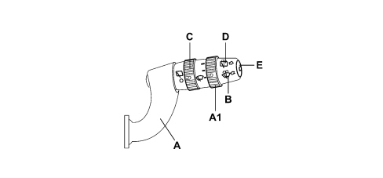
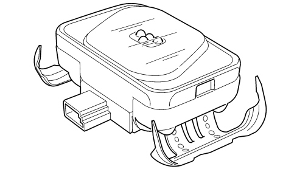
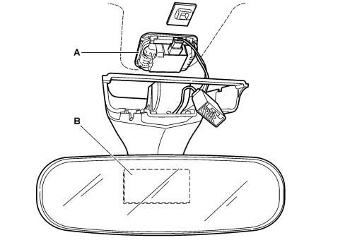
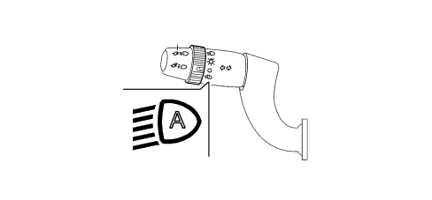

INTRODUCTION - SCREEN WASHERS AND HEADLAMP WASH/WIPE
- Path
- Descriptions > 50 AUXILIARY UNITS > 5050 SCREEN WASHERS AND HEADLAMP WASH/WIPE > INTRODUCTION - SCREEN WASHERS AND HEADLAMP WASH/WIPE
- Kind
- system description
- Applies to
- all engines; all production periods
- Interactive page
- https://sloeber94.github.io/elrnDB-fCrm/en/#/194001900
Applies to: all engines; all production periods
INTRODUCTION
The vehicle is equipped with a system that cleans and washes the front and rear windscreens. The vehicle may be fitted as an option with a pressurised liquid washing system for the front headlamps.
WINDSCREEN WASH/WIPE
The windscreen wash/wipe assembly cleans and washes the windscreen.
There is an electronic device for the management of this function that identifies the presence of drops of water on the windscreen (rain sensor).
The innovative features of the windscreen washer assembly are essentially:
- the smart wash operating strategy applied for the windscreen wiper.
- the presence of the rain sensor.
The windscreen wiper mechanism was developed to optimise the sweep area and allow the brushes to operate under the correct conditions (wiping angle, pressure on the windscreen) at all times.
Due to the electronic control system and according to the position of the right steering wheel stalk switch, the system manages operation of the direct current wiper motor by means of two windings, i.e. at two rotating speeds.
The rain sensor allows automatic assembly operation under weather conditions that would require the user to intervene repeatedly and continuously.
The smart washing strategy assured by the electronic control system allows the residual traces of washer fluid that are normally apparent at the end of the washing cycle on a conventional winscreen wash/wipe system to be removed.
WINDSCREEN/REARSCREEN WASHER ELECTRIC PUMP
The electric windscreen washer pump is activated through the right steering column switch unit lever.
By moving the right steering column switch unit lever towards the driver (unstable position) the two-way pump receives an electrical power supply and is capable of supplying the front jets; conversely by pulling the lever towards the dashboard the pump is rotated in the opposite direction and the fluid comes out towards the rearscreen washer pipe and the rear jets are supplied.
REAR WINDSCREEN WASH/WIPE (REARSCREEN)
This device has the task of cleaning the rear windscreen very well. It has a single motor with a 12V supply which operates at voltages of between 9 and 16V with a bimetallic type overload cut out.
The wiping function is carried out by a single wiping element consisting of a plastic arm with internal linkage.
The jet is fastened to the upper edge of the tailgate.
REARSCREEN WIPER FUNCTION
The electronic module controls the intermittent operation of the rearscreen wiper motor in a similar way to the one described for the windscreen wiper.
The activation of the rearscreen wiper is synchronous with that of the windscreen wiper, but a frequency that is half that of the windscreen wiper (for every two impulses of the windscreen wiper, one is sent to the rearscreen wiper).
Automatic function
The system, in addition to the manual activation described previously, is activated automatically via the Body Computer which sends information to the steering column switch unit electronic module.
When, with the windscreen wiper activated either in manual or automatic operating mode (rain sensor), reverse gear is engaged, the dashboard control unit receives the signal from the reversing switch and sends it to the body computer which sends it to the steering column switch unit electronic module which controls the rearscreen wiper motor.
HEADLAMP WASHER
The headlamp washer system is designed to clean the surfaces of the front light clusters and keep them clean.
The headlamp washer system consists of:
- a specific electric pump on the windscreen washer fluid reservoir;
- two devices with spray nozzles which are bolted to the bumper;
- three connecting pipes between the pump and the devices inside the bumper;
OPERATING CYCLE
The function is activated when the following conditions arise:
- ignition key inserted and turned to ON position;
- dipped headlamps on;
- headlamp washer control active on stalk.
The control is activated by a windscreen washer control on the stalk unit that identifes the windscreen washing action. The Body Computer downloads the windscreen washer control activation time and increases a counter.
Because the nozzles are controlled by pump delivery pressure, they operate at the same frequency as the pump.
RIGHT STEERING COLUMN SWITCH UNIT LEVER
This includes the front and rear wiper controls. All the controls are activated by operating either the stalk or the wheel control on the actual lever. A button on the end of the stalk switch also controls trip computer functions.
For further details,
See descriptions 5560 INSTRUMENTS

A - Windscreen wiper control;
A1 - Windscreen wiper intermittence adjustment/Rain sensor sensitivity;
B - Winscreen wiper control;
C - Rear wiper control;
D - Rear washer control;
E - Trip computer control button.
Windscreen wiper control
This is operated by moving the lever in the same plane as the steering wheel. The control can be operated to 5 different positions:
Pos. 1= Single sweep (UNSTABLE): ANTICLOCKWISE DIRECTION;
Pos. 2= No circuit activated (STABILE): POS. REST;
Pos. 3= Intermittent / Automatic(STABLE): CLOCKWISE DIRECTION;
Pos. 4= Continuous 1st SPEED (STABLE): CLOCKWISE DIRECTION;
Pos. 5= Continuous 2nd SPEED (STABLE): CLOCKWISE DIRECTION.
ADJUSTMENT OF WINDSCREEN WIPER INTERMITTENCE/RAIN SENSOR SENSITIVITY
The control is located at the end of the stalk and operated by turning a wheel control clockwise to 4 stable positions corresponding to 4 different rain sensor settings with increasing sensitivity:
ELECTRONIC MODULE (BUILT INTO STALK UNIT)
This control unit controls the operation of the electric motors, front and rear wipers and washer functions.
In particular, it controls the operation of:
- Windscreen wiper: sweep rate;
- Rearscreen wiper: sweep rate and control during reversing;
- Windscreen washer function, with smart washing;
- Rearscreen washer function, with smart washing;
- Rain sensor.
Rear wiper control
The control is located on the stalk and operated by turning a wheel control.
The control offers 2 stable positions and is moved clockwise:
- Pos. 1 = No circuit operated;
- Pos. 2 = Rear wiper operated.
REAR WASHER CONTROL
This is operated by pushing the stalk towards the facia. The operation is UNSTABLE, i.e. the stalk returns to rest position when released.
The control simultaneously operates the rear wiper in smart washing mode.
RAIN SENSOR
The rain/dusk sensor, located on the windscreen glass by the electrchromic interior rear view mirror, is operated by the steering column switch unit electronic control unit.

Location
The rain sensor, described below, is located under the interior rear view mirror.

A - Rain / dusk sensor
B - Interior rear view mirror
SYSTEM COMPOSITION
The device works on an infrared wave length: based on the principle of refraction of a light beam through the glass, it allows the automatic adjustment of the number of windscreen wiper strokes proportional to the intensity of the rain.
Through the variation of the infrared rays the device is capable of measuring the dimensions, number and quantity of drops of rain present on the glass; as the refraction mode varies, the sensor reacts producing electrical impuses which are processed and sent via the serial network. The windscreen wiper control unit (incorporated in the steering column switch unit) operates the windscreen wiper according to the speed set by the rain sensor. The sensor communicates with the steering column switch unit and the body computer by means of an A-BUS serial interface.
The rain sensor consists of two sets of four infrared ray leds arranged in a ring and a receiving element located in the centre of the leds.
The sensor, integrated with the dusk sensor function and housed in the rear view mirror unit, is kept in contact with the windscreen by a spring that acts on a protective cover located behind the actual mirror.
The LED and receiver, embedded in a polymer, are connected to the windscreen wiper control unit by means of a wire with a connector. In this way, the sensor can be removed easily after removing the cover and disconnecting the connector.
The device is activated by moving the steering column switch unit from the stop or first speed positions to the intermittent/automatic position. At this point the windscreen wiper completes a confirmation stroke informing the user that it has moved on to automatic operation.
The dynamic interference (raindrop) detection sensitivity is adjusted by means of a wheel on the lever to four levels. Each time the sensitivity is altered, the windscreen carries out a confirmation stroke.
If the lever remains in the auto position and the panel is switched off, at the next key ON the automatic function is not activated. In this case, to return to automatic mode, simply move the wiper lever to any position or turn the sensitivity setting ring on the actual lever. This happens both if there is a fault in the system and in normal operating conditions.
Operation
When the right lever is moved to intermittent/automatic position A1, the rain sensor is activated.
The frequency of the windscreen wiper strokes is automatically adjusted depending on the amount of water on the windscreen. the frequency varies continuously from nil (no stroke - windscreen dry) to wiping at the second continuous speed (heavy rain)
The activation of the rain sensor involves a windscreen wiper arm stroke as feedback to confirm that it has been switched on.
If the panel is off (key-off), the RAIN SENSOR places the windscreen wiper system in stand-by when the stalk is left in AUTOMATIC position. Next time the ignition key is turned on, no wipe cycle is performed even if rain is present.
To restore AUTOMATIC system operation, only of the following manoeuvres may be performed on the steering wheel stalk unit wiper stalk:
- the stalk may be moved from AUTOMATIC position to any other position and return to AUTOMATIC position;
- sensitivity may be adjusted by turning the WHEEL (increased or decreased).
When RAIN SENSOR operation is reset by means of one of the above manoeuvres, the wiper moves through one beat even if the glass is dry to notify the uwer that it has been reactivated.
If the stalk unit does not receive a signal from the Rain Sensor (due to breaks in the wiring or Sensor malfunctions), the windscreen wiper should operate in accordance with the intermittent mode cycle described with the right stalk in intermittent/automatic position.
Recovery function
If the operation of the rain sensor is found to be incorrect, the recovery function is implemented and the operation of the windscreen wiper is managed as if it were in manual mode.
The electronic module establishes that the rain sensor is not working correctly if, for a period of 3 secs., it does not receive significant information from the sensor or if it receives a failure status from the A-BUS network.
The sensor also communicates the fault message to the Body Computer. The Body Computer controls the activation of the fault signalling at the instrument panel.
If the fault is intermittent and the recovery situation is implemented, the fault signalling at the NQS disappears, but the automatic mode operation is not restored. To activate it again, move the wiper lever in the steering column switch unit into any position and then return it to the Auto position, or turn the sensor sensitivity wheel.
DUSK SENSOR
Operation
The side lights and the dipped headlamps can be automatically activated using the dusk sensor if the AUTO function in the steering column switch unit is set.

The dusk sensor is an infra red device which operates at different sensitivity levels: when the dusk sensor is activated a message is shown on the instrument panel display indicating the sensitivity setting (from 1 to 3): this setting can be adjusted using the "Mode +" and "Mode -" buttons.
At the key on, the dusk sensor communicates the information relating to the outside brightness to the Body Computer via the A-BUS serial network, sending it periodically once a second.
When the user activates the dusk sensor, the Body Computer acquires the AUTO command and transmits it to the instrument panel which activates the message to select the sensor sensitivity setting, restoring the last value selected previously.
The variation in the sensor sensitivity level can also be made after the activation both with the vehicle driving or stationary by searching for the item relating to the sensor sensitivity within the instrument panel menu.
The Body Computer uses the message transmitted by the dusk sensor to activate/deactivate the side lights and dipped headlamps. The side lights and the dipped headlamps are switched on simultaneously, whilst the side lights are switched off 10 seconds after the dipped headlamps are turned off.
Recovery function
In the presence of the following faults:
- failure signal by the sensor;
- Body Computer no longer receives information from the dusk sensor via the A-BUS line.
The Body Computer implements the following strategies:
- If the steering column switch unit is in the AUTO position and the side lights are off: it supplies the failure signal to the instrument panel and simultaneously switches on the side lights and the dipped headlamps.
- If the steering column switch unit is in the AUTO position and the side lights are on: it supplies the failure signal to the instrument panel and switches on the side lights and the dipped headlamps.
- If the steering column switch unit is not in the AUTO position: it supplies the failure signal to the instrument panel and does not implement any recovery action for the dusk sensor.